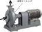
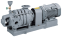
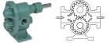

2021年
問題76 空気調和設備のポンプ・配管に関する次の記述のうち，最も不適当なものはどれか．
（1）ポンプの損失水頭は，管内流速の2 乗に比例する．
（2）片吸込み渦巻きポンプは，ターボ型ポンプに分類される．
（3）歯車ポンプは，油輸送などの粘度の高い液体の輸送用途に用いられることが多い．
（4）ポンプの急停止による水撃作用を防止するには，緩閉式逆止め弁を用いる方法がある．
（5）キャビテーションとは，流量と圧力の周期的な変動が続き運転が安定しない現象をいう．
2021年
問題76 正解（5） 頻出度AAA
-(5) はサージング現象の説明である．
「サージング（Surging：脈動）」はポンプや送風機の流体機械などの共通の現象で，特性曲線にサージング領域（右上がり特性域．風量，静圧がともに増加する領域．2021-76-1図参照）を持つ機械は，この領域で運転すると，流体の流量と圧力の周期的な変動が生じ，運転が不安定になり，ダクトや配管に振動・騒音が発生することがある．この現象をサージングと呼ぶ．サージングを避けるためには，ダンパ，バルブを開けて，サージング領域より大流量側の右下がり部分で運転する必要がある．
2021-76-1図 サージング領域
「キャビテーション（cavitation：空洞現象とも言われる．）」は液流体に特有の現象で，ベルヌーイの定理により流体の高速流れによってインペラ(羽根車)表面の静圧が低下し，部分的に流体の飽和蒸気圧力以下になることで液中の微少な気泡やごみを核として液が沸騰し，液の蒸気で満たされた気泡が発生する．この気泡が急激に押しつぶされるときに激しい騒音と振動が発生し，吐出量も低下する．繰り返しの衝撃波によってついにはインペラの金属面に損傷が発生する．
水面よりポンプが高い位置にある場合，理論的には水面から約10m(＝大気圧)まで吸上げ可能であるが，必要NPSHや吸込み配管の抵抗等があって実際には5～6mまでである．水が温水になると，キャビテーションを起こしやすくなるためさらに低くなり，60℃を超えると吸上げ不可能となる．
ポンプの吸込み口において液体が有する圧力(大気圧－ポンプ吸込み口と液面の高さの差)から液温に相当する蒸気圧を差し引いた圧力を液柱で表したものがNPSH(有効吸込みヘッド)である．ポンプが内部でキャビテーションを起こさないために必要な圧力の余裕を必要NPSHという．必要NPSHはポンプの性能の1つで，この値が小さいほど吸込み能力が高い．キャビテーションを防ぐためにはNPSH＞必要NPSHでなければならない（2021-76-2図参照）．
2021-76-2図 キャビテーションと有効吸込みヘッド(NPSH)
NPSHは次式で求めることができる． \[ {\rm NPSH}=\frac {P_A}{\rho {\rm g}}-\frac {P_V}{\rho {\rm g}}-S-H_l \ {\rm ［m］}\]
上式中の\(\displaystyle \frac{P_A}{\rho {\rm g}}-\frac{P_V}{\rho {\rm g}}\)は，(大気による押上水頭圧)－(水の飽和水蒸気水頭圧)で，およそ10mであるから，
例えば，\(S\)=3m，\(H_L\)＝2.3mの時，NPSH＝10－3－2.3＝4.7mとなる．したがって，ポンプの必要NPSH＜4.7mでなければならない．
特性曲線図の例（2021-76-3図）から，キャビテーションはポンプの送水量が大きい範囲で起きやすいことが分かる．吐出しバルブを絞ることによってキャビテーションの発生を防止できることが多い．
2021-76-3図 特性曲線図の例
出典 公益財団法人 日本建築衛生管理教育センター
新建築物の環境衛生管理第2版第1刷 中巻233頁 図5-2-1(46)を基に作成
-(1) ポンプの損失水頭は，管内流速（＝流量）の2乗に比例するので，ポンプの性能曲線に描かれるポンプの抵抗曲線は2次曲線になる．
-(2) ，-(3) ポンプの種類（2021-76-1表参照）．
2021-76-1表 ポンプの種類
| ターボ型 | 遠心ポンプ | 渦巻きポンプ，ディフューザポンプ |
| 斜流ポンプ | ||
| 軸流ポンプ | ||
| 容積型 | 往復ポンプ | ピストンポンプ，プランジャポンプ，ダイヤフラムポンプ |
| 回転ポンプ | 歯車ポンプ，ねじポンプ，べーンポンプ | |
| 特殊型 | 渦流ポンプ，気泡ポンプ，水撃ポンプ，ジェットポンプ，電磁ポンプ，粘性ポンプ | |
渦巻きポンプ（2021-76-4図）は，羽根車と渦巻き状のケーシング(渦室)で水に遠心力を与え，速度エネルギーを圧力エネルギーに変換する．
2021-76-4図 渦巻きポンプ

出典 川本ポンプ
https://www.kawamoto.co.jp/products/index02.php?id=7 を基に作成
渦巻きポンプには片吸込み型と両吸込み型があり，水量が多い場合は，両吸込み型が用いられる．
高揚程を得るために2枚以上の羽根車(インペラ)を直列に組み込み，吸込口から吐出口まで，順次昇圧していくポンプを多段渦巻きポンプという（2021-76-4図）．
2021-76-5図 多段渦巻きポンプ

出典 川本ポンプ
https://www.kawamoto.co.jp/products/index02.php?id=27
歯車ポンプ（ギヤポンプ）は，2個の歯車がケーシングの中で回転し，流体を押し出す容積式ポンプで，圧力にかかわらず流量がほぼ一定に保たれる．歯車ポンプは油類の移送に広く用いられている（2021-76-5図参照）．
2021-76-6図 歯車ポンプ（ギヤポンプ）

出典 株式会社亀嶋鐵工所
https://nk-pump.co.jp/product/ka-1/
次のモノタロウの説明「ギアポンプの特長」が，使い方がよくわかる．
-(4) 水撃作用（ウォーターハンマ）の防止には，その発生原因により次のような対策を取る．
1．エアチャンバ，ショックアブソーバ，その他のウォーターハンマ防止器をできるだけ発生箇所の近くに取り付ける．
2．ポンプが急停止しないようにポンプにフライホイールなどを付加して慣性重量を大きくする．
3．ポンプの吐出し側の逆止弁を急開式や自閉式として逆流を阻止する．
4．緩閉式逆止弁を用い逆流の圧力変動を緩和する．